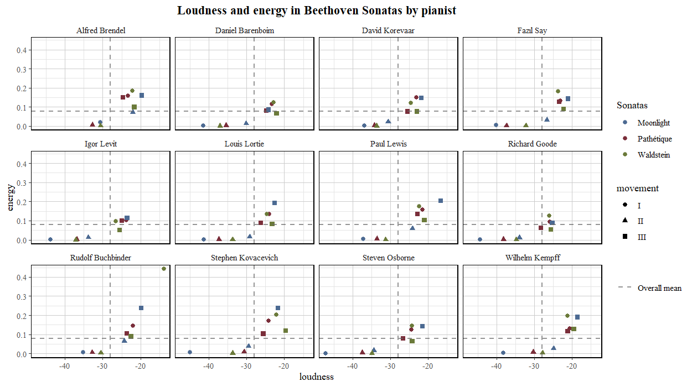
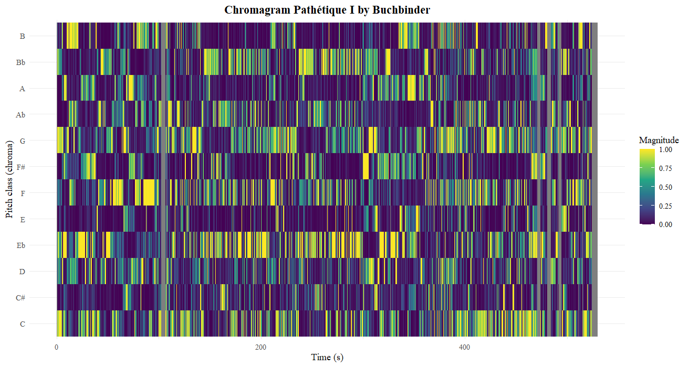
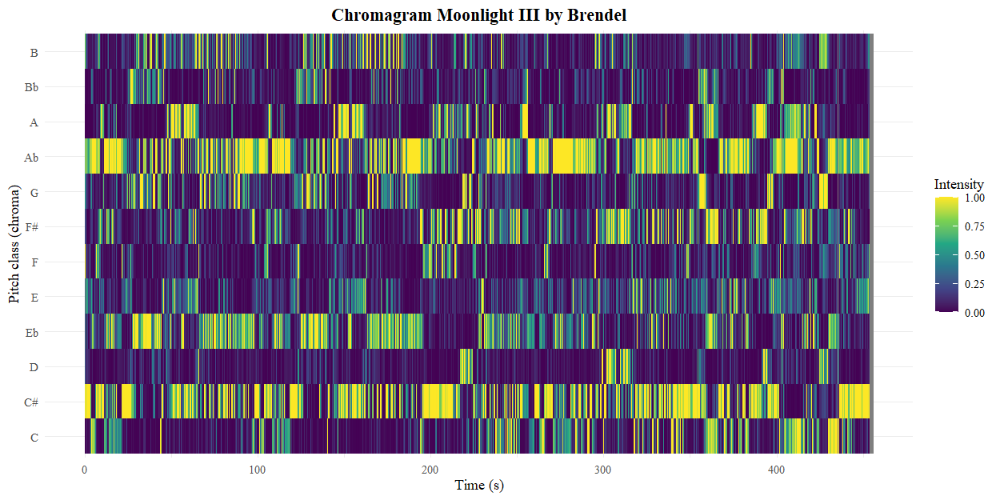
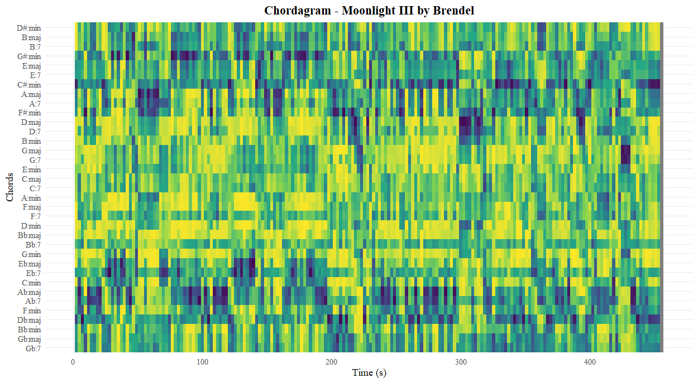
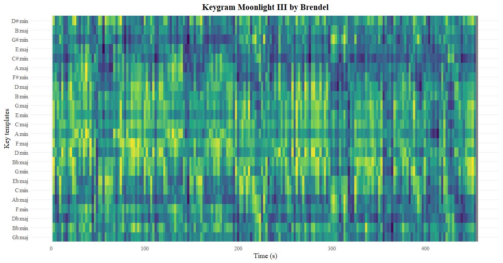
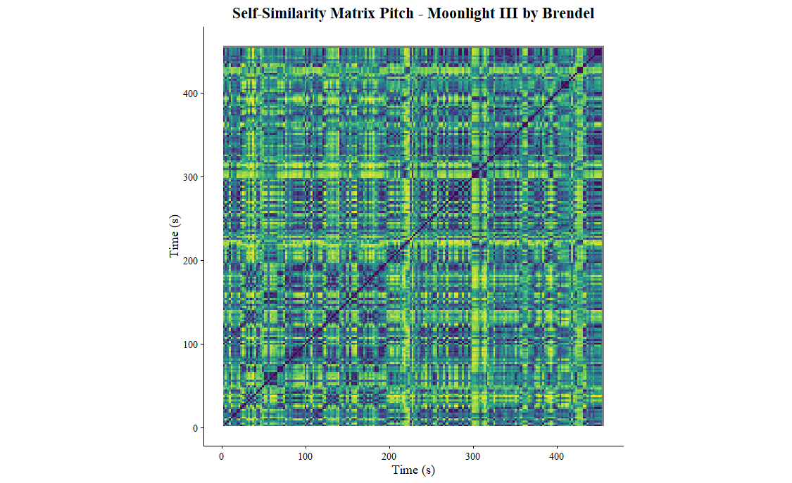
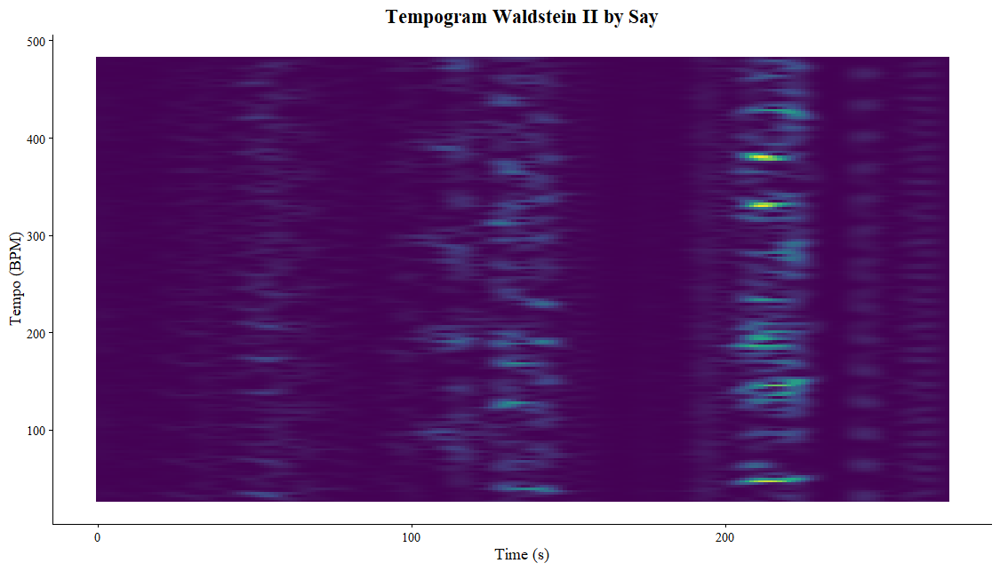
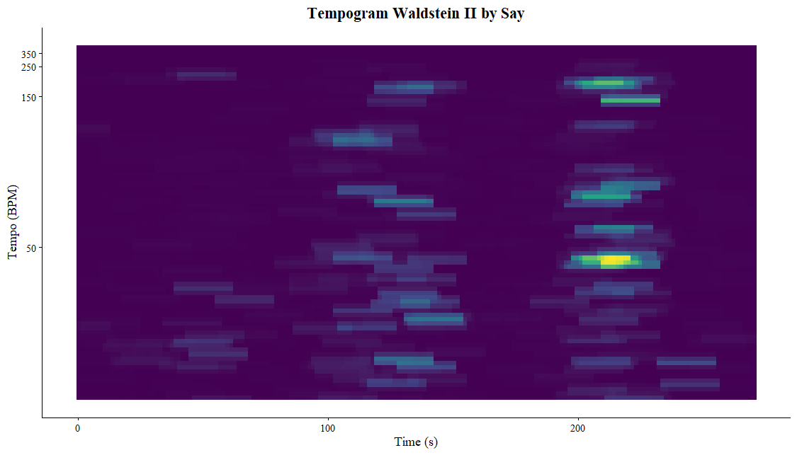
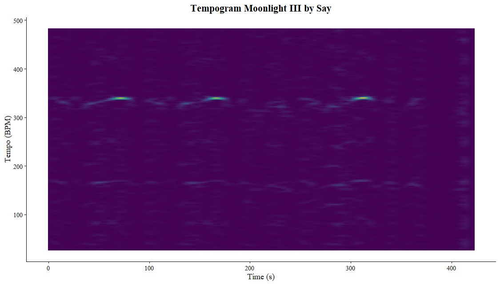

Welcome to my online portfolio for Computational Musicology. I have compiled a corpus of several recordings of Ludwig van Beethoven’s sonatas no.’s 8 (Pathétique), 14 (Moonlight) and 21 (Waldstein). These are some of the most famous piano works of Beethoven and even of Western music history. That is why these works have been interpreted many times. Thus, the recordings span from the 60s to very recent ones from 2025.
• Brendel: 60s (?)
• Barenboim: 80s
• Buchbinder: 80s
• Lortie: 90s
• Kempff: 90s
• Goode: 90s
• Kovacevich: 2000s (?)
• Lewis: 2000s
• Osborne: 2010s
• Levit: 2010s
• Say: 2010s (release march 2020)
• Korevaar: 2020s

Spotify provides features of tracks that can be analysed. For example, tracks can be described by ‘energy’, ‘happiness’ and ‘acousticness’. In the plot on the left, the various recordings by the pianists are plotted by loudness and energy.
Intepration will follow

Chromagram of Beethoven’s Pathétique Sonata (No. 8), 1st movement. Perfomance by Buchbinder. Normalisation: Chebyshev
Chromagram of Beethoven’s Moonlight Sonata (No. 14), 3rd movement. Perfomance by Brendel. Normalisation: ChebyshevI have made a chromagram of a performance by Burchbinder of the first movement of sonata no. 8 and also a chromagram of a perfomance by Brendel of the third movement of sonata 14.
Sonata no. 8 is in c-minor and starts with the c-minor chord (C-E♭-G). Looking at the chromagram overall, it doesn’t become immediately clear that the piece is in c-minor. However, the beginning does have a high magnitude on the note C. The C also becomes more prominent at the end of the piece. During the rest of the piece, the E♭ is also being emphasized a lot, especially around 150 seconds. This is when the piece switches to the key e♭-minor (during the second subject). Shortly after it also modulates to E-major, hence the strong magnitude.
In the chromagram of sonata no. 14 it’s more apparent that the piece is in c♯-minor, because there is a lot of emphasis on this pitch class. Surprisingly, there is also a high intensity on A♭. This becomes less strange when one remembers that A♭ and G♯ are enharmonically equivalent. G♯ is the dominant (V) of c♯-minor and thus very important.
Chromagrams measure pitch energy, not tonal function, so the dominant can easily appear stronger than the tonic. Key- and chordagrams do try to capture tonal function, so it is good to take a look at those.

Chordagram of Beethoven’s Moonlight Sonata (No. 14), 3rd movement. Perfomance by Brendel. Normalisation: Chebyshev
Keygram of Beethoven’s Moonlight Sonata (No. 14), 3rd movement. Perfomance by Brendel. Normalisation: ChebyshevOn the left are a chordagram and a keygram of a performance by Brendel of the 3rd movement of sonata no. 14. The chordagram shows which chord templates best matches the chroma pattern and the keygram shows which key template best matches the chroma pattern. Blue means there is a high similarity.
The pattern of the chordagram is quite similar to the chromagram. There is high similarity between the templates for c♯-minor, g♯-minor and D♭-major during the whole piece and A♭-major(7) and E♭-major(7) at certain moments. There is also a dark blue spot for D-maj(7) later in the piece. The constant dark band for c♯-minor is exactly what we expect, because the chroma vectors frequently contain the tonic triad tones: C♯–E–G♯. G♯-minor also appears strong because it shares one note with the tonic triad and the dominant is stronlgy emhpasized throughout the piece. D♭-major is the enharmonic spelling of c♯-minor, so that is why this also appears often in the chordagram. A♭-major(7) and E♭ major(7) appear because pitch collections associated with the dominant function can resemble these chord templates in the chroma representation. Something that strengthens these effects is that the piece contains a lot of fast arpeggios: the movement is full of broken chords, so each analysis frame may contain only partial chord tones. The strong blue spot around 300 seconds is due to arpeggios stopping briefly and the notes being played together, which happen to be D-F♯-A.
The keygram is less obvious. However, it does become clear that the key templates c♯-minor, g♯-minor and A♭-major match the chroma vectors the most throughout the piece, but it doesn’t become apparent from the keygram which of these is the main key. Something interesting about this movement is that it deviates from the usual sonata from. It is common for the second theme to be in the relative major key, but that is not the case here. Here the second theme is in g♯-minor. This means that the piece does not shift to a major key. This, however, in turn does not mean that there are no major chords used, as is visible in the chordagram.
Harmony plays a big role in the overall structure of a piano sonata. A Self-Similarity Matrix visualizes this.

Self-similarity matrix based on pitch of Beethoven’s Moonlight Sonata (No. 14), 3rd movement. Performance by Brendel. Normalisation: Euclidean. Distance: cosine.This is a Self-Similarity Matrices (SSM) of a performance by Brendel of the third movement of sonata no 14, based on pitch.
This piece is in c♯-minor and in sonata form, which means that the exposition get’s repeated. This happens at around a 100 seconds and a (faint) blue diagonal line is visible at this point in the SSM. The entirety of the exposition is visible as a block-like structure around 215 seconds (with a yellow outline). Here the second theme sounds in f♯-minor, which is different from the exposition where it was in g♯-minor.
There is not a block-like structure visible for the entirety of the development, which ends at around 265 seconds. At this point the recapitulation starts with the first subject remaining unaltered. The second subject is now in the tonic (instead of g♯-minor as in the exposition).
The overall SSM has a lot of block-like structures, but these are not easy to distinguish from each other and they cannot easily be linked to what is audible in the audio. The reason for this, is that piano sonatas in sonata form are build on themes and motives that get repeated but could also get slightly altered. Thus, there is a lot of homogeneity. In addition, this piece consists mainly of fast arpeggios and listening to the piece gives the impression that everything flows together organically and there are few contrasting parts.

Tempogram of Beethoven’s Waldstein Sonata (No. 21), 2nd movement, Perfomance by Say. Fourier-based.
Tempogram of Beethoven’s Waldstein Sonata (No. 21), 2nd movement, Perfomance by Say. Autocorrelation based.
Tempogram of Beethoven’s Moonlight Sonata (No. 14), 3rd movement, Perfomance by Say. Fourier-based.On the right are three tempograms: two depicting the second movement of sonata no. 21 and the others are of the third movement of sonata no. 14. Both performances are by Say. I chose these two pieces because when listening to them they sound very contrasting in terms of tempo.
The second movement of sonata no. 21 is a short adagio in 6/8 time that serves as introduction on the next movement. When listening to the piece, it is hard to figure out what the tempo is due to the many rests, especially at the beginning of the piece. This is also illustrated in the tempogram, which looks like it doesn’t really know what the tempo is at any given moment. However, around 200 second some lines become visible, but these are faint and all over the place. This is also when there starts to be more activity in the piece, namely a wave like pattern of notes in the left hand (without rests). There is still ambiguity in the tempogram regarding the BPM. However, when looking at the autocorrelation based tempogram below it, there is a clear line at 200 seconds at the level of 50 BPM, which roughly correspond to the tempo of that passage.
The third movement of sonata no. 14 is a very fast presto agitato in common time. There are three clear lines in the tempogram, all at the level of around 350 BPM, which corresponds to the percieved tempo listening to the piece. The lines appear at around 80, 160 and 310 seconds, with align with moments where the perceived tempo is particularly easy to identify by ear.
The tempograms clearly illustrate the contrasting rhythmic character of the two movements. The adagio movement produces a less defined tempo representation due to its slow pace and frequent rests, whereas the presto movement shows a much clearer tempo pattern.
Compare the tempo curves to the self-similarity matrices of multiple performances of the same piece (easiest for classical music).
- im going to compare moonlight III kempff with levit to see if there are differences in the tempograms, because when listening it sounds like levit plays it faster